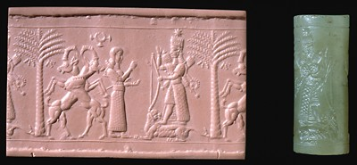

The Challenge -
Assyrian seal

This hardstone seal and its impression in modern clay show the goddess Ishtar, dressed for war with a bow and quivers full of arrows. She stands on her sacred animal, the lion. A worshipper, who may be the owner of the seal, stands before her. The two goats and palm tree may represent fertility. The seal dates to the time of the Assyrian empire and was made around 720 B.C.
To learn more about Ishtar visit the Gods Explore.
|
|